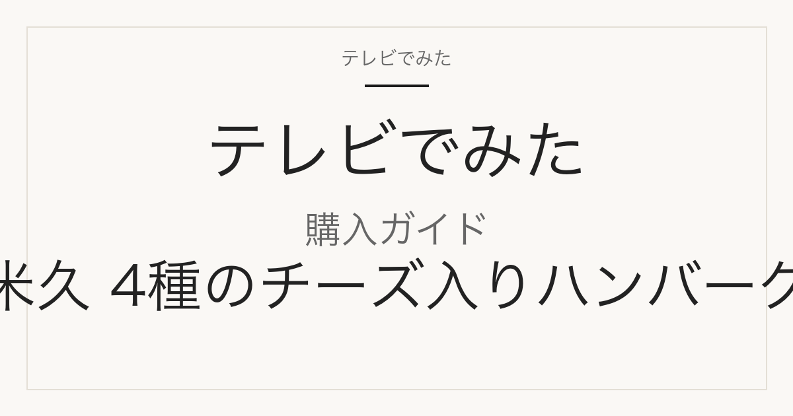

購入ガイド
米久「4種のチーズ入りハンバーグ」はどこで買える？単品の有無と6食セットの中身
サタプラ 2026年8月29日 チーズハンバーグ 第5位で紹介

どこで買える？
米久「4種のチーズ入りハンバーグ」は公式ショップが[通販限定商品]と表記している商品で、楽天市場の米久公式店「感動を創る 米久」と伊藤ハム米久公式オンラインショップで買えます。番組掲載の3,549円は「6食セット（2種のソース付き）」の価格で、楽天・公式ショップとも2026-09-09 14:30時点で同じ3,549円でした。ハンバーグ130g×1袋の単品（398円）も両店にありますが、単品にはソースが付きません。どちらの店も冷凍のクール便で送料が別途かかります（楽天店は1配送1,145円・11,000円以上で無料、公式ショップは1,145円・7,000円以上で無料）。

この記事には広告・アフィリエイトリンクが含まれます。正式商品名・型番・容量はメーカー公式または正規販売ページで確認しています。価格・送料・在庫は確認日時時点のもので変わります。価格の安さ・在庫の有無・配送日数は、確認した範囲と日時を添えた事実だけを書き、断定していません。
番組で紹介された商品の正式名称と仕様
| メーカー | 米久株式会社（伊藤ハム米久グループ） |
|---|---|
| 正式商品名 | 4種のチーズ入りハンバーグ6食セット（2種のソース付き） |
| 型番・品番 | 品番 80123-260601（公式ショップ商品コード 1665）／単品は品番 60870-260501（商品コード 60870） |
| JAN | 未確認 |
| 容量・サイズ | 4種のチーズ入りハンバーグ130g×6袋、洋風デミグラスソース40g×4袋、トマトイタリアンソース40g×2袋（冷凍・-18℃以下保存・賞味期限は製造日から180日） |
| バリエーション | 同じ130gのハンバーグは、単品（130g×1袋・ソースなし・398円）、6食セット（2種のソース付き・3,549円）、2種のハンバーグ チーズ&プレーン8食セット（4種のチーズ入り4袋＋プレーン4袋＋デミグラスソース8袋・4,640円）の3形態を公式店で確認。色違いや別容量の単品は確認できず。名前が似た「3種のチーズ入りハンバーグ 750g」（品番80544-260601・1,980円）は国産鶏肉ベース・電子レンジ調理の別商品。 |
公式ショップの商品説明では「[通販限定商品] 鉄板で両面を焼いたふっくらハンバーグに、4種類のチーズ（チェダー、ゴーダ、パルメザン、カマンベール）を配合したチーズフードを入れました」と記載。製造は国内グループ工場（伊藤ハム米久プラント 富士工場）、販売者は米久株式会社。調理は湯せん。JANコードは公式・楽天とも掲載なしのため未確認。
販売先ごとの入数・価格・送料
| 販売先 | 商品名・型番 | 入数 | 確認時価格 | 送料 | 確認日時 |
|---|---|---|---|---|---|
| 楽天市場 感動を創る 米久（米久公式店） | 4種のチーズ入り ハンバーグ 6食 セット ソース付き 冷凍（商品番号 80123-260601／130g×6袋＋洋風デミグラスソース40g×4袋＋トマトイタリアンソース40g×2袋） | 6食（ハンバーグ6袋＋ソース6袋） | 3,549円（税込） | 送料別。クール便1配送1,145円（北海道1,445円・沖縄2,145円）、商品代金11,000円（税込）以上で送料無料 | 2026-09-09 14:28 |
| 楽天市場 感動を創る 米久（米久公式店） | お試し 4種のチーズ入り ハンバーグ 130g×1パック（商品番号 60870-260501／単品・※ソースは付属しない） | 1食（ソースなし） | 398円（税込） | 送料別。クール便1配送1,145円（北海道1,445円・沖縄2,145円）、商品代金11,000円（税込）以上で送料無料 | 2026-09-09 14:28 |
| 楽天市場 感動を創る 米久（米久公式店） | 2種のハンバーグ チーズ&プレーン 130g×8食セット ソース付き（商品番号 80381-260601／4種のチーズ入りハンバーグ130g×4袋＋ハンバーグ130g×4袋＋洋風デミグラスソース40g×8袋・トマトソースなし） | 8食（チーズ入り4袋＋プレーン4袋） | 4,640円（税込） | 送料別。クール便1配送1,145円（北海道1,445円・沖縄2,145円）、商品代金11,000円（税込）以上で送料無料 | 2026-09-09 14:28 |
| 楽天市場 感動を創る 米久（米久公式店） | 【別商品】3種のチーズ入り ハンバーグ 750g×1パック レンジ調理（商品番号 80544-260601／国産鶏肉ベース・賞味期限は製造日から365日） | 750g×1袋 | 1,980円（税込） | 送料別。クール便1配送1,145円（北海道1,445円・沖縄2,145円）、商品代金11,000円（税込）以上で送料無料 | 2026-09-09 14:29 |
| 伊藤ハム米久[公式]オンラインショップ | 4種のチーズ入りハンバーグ6食セット（2種のソース付き）（商品コード 1665／品番 80123-260601／在庫表示「〇」） | 6食（ハンバーグ6袋＋ソース6袋） | 3,549円 | 全国一律 クール便1,145円（税込）。1配送につき商品代金7,000円（税込）以上で送料無料（キャンペーン時を除く） | 2026-09-09 14:31 |
| 伊藤ハム米久[公式]オンラインショップ | 4種のチーズ入りハンバーグ 130g 単品（商品コード 60870／品番 60870-260501／在庫表示「〇」／公式ショップ限定「まとめ割」対象と表記） | 1食（ソースなし） | 398円 | 全国一律 クール便1,145円（税込）。1配送につき商品代金7,000円（税込）以上で送料無料（キャンペーン時を除く） | 2026-09-09 14:31 |
上記6件はすべて米久の公式販売経路（楽天公式店と公式オンラインショップ）。2026-09-09 14:28〜14:31時点で楽天4ページに売り切れ表示はなく、公式ショップ2ページは在庫「〇」表示でした。楽天の米久公式店以外の出品、Amazon等の取扱は未確認です。JANコードはどのページにも掲載がなく未確認。
似た商品・別容量との違い
6食セット（3,549円）と単品（398円）の違い
6食セットは4種のチーズ入りハンバーグ130g×6袋に、洋風デミグラスソース40g×4袋とトマトイタリアンソース40g×2袋が付きます（品番80123-260601）。単品は130g×1袋のみで、楽天ページに「※ソースは付属しておりません」と明記されています（品番60870-260501）。セット価格を6で割った1食あたりは約592円（3,549円÷6。ソース6袋分を含む）、単品が398円です。
8食セット「2種のハンバーグ チーズ&プレーン」との違い
8食セット（品番80381-260601・4,640円）は、4種のチーズ入りハンバーグ130g×4袋とチーズなしの「ハンバーグ」130g×4袋の混合です。ソースは洋風デミグラスソース40g×8袋のみで、6食セットに入るトマトイタリアンソースは付きません。
「3種のチーズ入りハンバーグ 750g」は別商品
同じ楽天公式店にある「3種のチーズ入り ハンバーグ 750g×1パック」（品番80544-260601・1,980円）は、原材料の先頭が鶏肉（国産）で、電子レンジ調理・賞味期限が製造日から365日の別商品です。番組で紹介された4種のチーズ入りは牛肉・豚肉ベース、湯せん調理、賞味期限は製造日から180日で、名前は似ていますが中身が異なります。
楽天公式店と公式オンラインショップの送料条件
商品価格は2026-09-09時点で両店とも6食セット3,549円・単品398円で同じです。送料は、楽天店がクール便1配送1,145円（北海道1,445円・沖縄2,145円）で商品代金11,000円以上なら無料、公式オンラインショップが全国一律クール便1,145円で7,000円以上なら無料（キャンペーン時を除く）と、無料になる金額が異なります。
購入前によくある質問
番組の3,549円は単品の価格ですか？
いいえ。3,549円は「4種のチーズ入りハンバーグ6食セット（2種のソース付き）」の価格です。ハンバーグ1個だけなら130g×1袋の単品が398円で販売されていますが、単品にはソースが付きません（2026-09-09時点の楽天公式店・公式オンラインショップの表示）。
スーパーなど店頭でも買えますか？
伊藤ハム米久公式オンラインショップの商品説明に[通販限定商品]と記載されています。当サイトでは店頭での取扱は確認していません。購入先として確認できたのは楽天市場の米久公式店と公式オンラインショップの2つです。
6食セットのソースは何が何袋入っていますか？
洋風デミグラスソース40g×4袋とトマトイタリアンソース40g×2袋の計6袋で、ハンバーグ6袋に1袋ずつ対応する数です。8食のチーズ&プレーンセットはデミグラスソース8袋のみでトマトソースは入りません。
送料はかかりますか？
どちらの店も冷凍のクール便で、6食セット1箱だけの注文では送料がかかります。楽天公式店は1配送1,145円（北海道1,445円・沖縄2,145円）で11,000円以上なら無料、公式オンラインショップは全国一律1,145円で7,000円以上なら無料です（2026-09-09時点、キャンペーン時を除く）。
出典・確認方法
- 伊藤ハム米久[公式]オンラインショップ 4種のチーズ入りハンバーグ6食セット（2種のソース付き）
- 伊藤ハム米久[公式]オンラインショップ 4種のチーズ入りハンバーグ（単品）
- 楽天市場 感動を創る 米久 4種のチーズ入りハンバーグ 6食セット
- 楽天市場 感動を創る 米久 お試し 4種のチーズ入りハンバーグ 130g×1パック
- 楽天市場 感動を創る 米久 2種のハンバーグ チーズ&プレーン 8食セット
- 楽天市場 感動を創る 米久 3種のチーズ入りハンバーグ 750g
- 楽天市場 感動を創る 米久 お支払・送料（店舗情報）
- テレビでみた サタプラ チーズハンバーグランキングTOP5（2026年8月29日）
公開：2026年9月9日／最終更新：2026年9月9日。掲載内容は確認日時時点の一次情報によります。